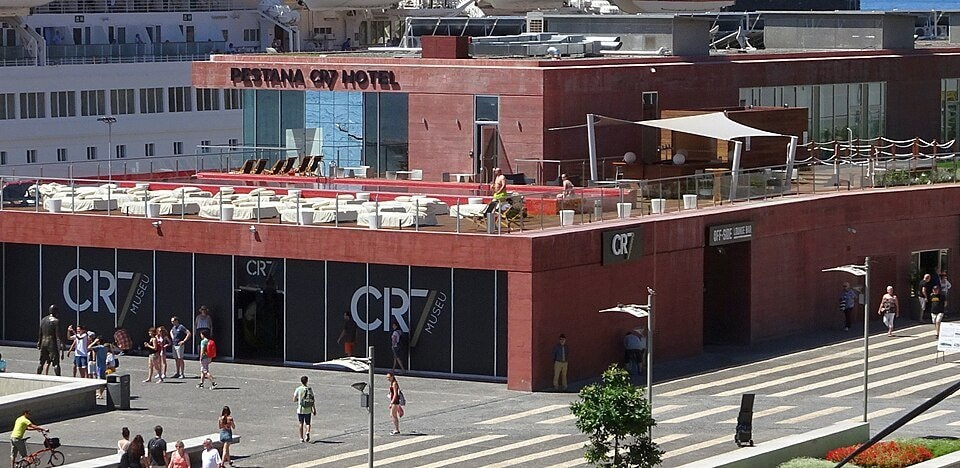

CR7 Business Empire — A Narcissistic Personal Brand
The CR7 empire map: Since registering the CR7 trademark in 2006, Ronaldo has built an empire spanning hotels, underwear, fragrance, gyms and a hair-transplant clinic, becoming the first team-sport athlete to surpass $1 billion in career earnings. But behind this 'success' is relentless, all-encompassing self-promotion.
Pestana CR7 hotels: The CR7 lifestyle hotels, co-branded with Portugal's Pestana group, dot Lisbon, Madrid, New York and Marrakech. Every property is plastered with giant portraits and shirts of him — guests check into what feels like a personal temple; the narcissism is staggering.
Underwear and fragrance: In CR7 underwear ads Ronaldo poses half-naked to flex his muscles, with giant billboards once taking over Times Square in New York. The fragrance line likewise operates on the logic that 'he himself is the scent', with products simply named 'CR7' — the brand is the man, the man is the brand.
Narcissistic marketing: From holding the world's most-followed Instagram account, to posing to camera after every goal, to the documentary 'I Am Ronaldo', he commercialised personality cult to the limit. One marketing expert quipped: 'He isn't selling products — he's selling the worship of himself.'
The Insparya hair clinic: Ronaldo invested in the Insparya hair-transplant chain, yet himself boasts a thick head of curls, prompting jokes that 'he doesn't need it but sells it to others'. This commercial sniff for harvesting anxiety is less 'smart' than 'opportunistic'.
The Museu CR7 personality-cult temple: In 2013 Ronaldo opened the Museu CR7 in his hometown of Funchal, Madeira, later adding a Lisbon outpost. The museum displays replicas of his Ballon d'Or trophies, shirts and giant statues — a 'personality cult temple' built by a living man for himself. Critics are blunt: an active athlete building his own museum is the ultimate form of narcissism, pricing self-worship for tourists.
Private island and film studio: According to The Sun, Ronaldo also owns a private island, a film studio, a cricket ground and other assets, with the 7EGEND image company managing his image rights. A player who has turned himself into a multinational conglomerate, with football almost a side hustle.
The shadow on the empire: When an athlete pours this much energy into business, his sporting form inevitably suffers. After returning to United in 2021 Ronaldo's off-pitch endorsements, documentaries and Instagram updates were more frequent than his goals, criticised for 'putting the cart before the horse' and turning the pitch into a commercial showcase.